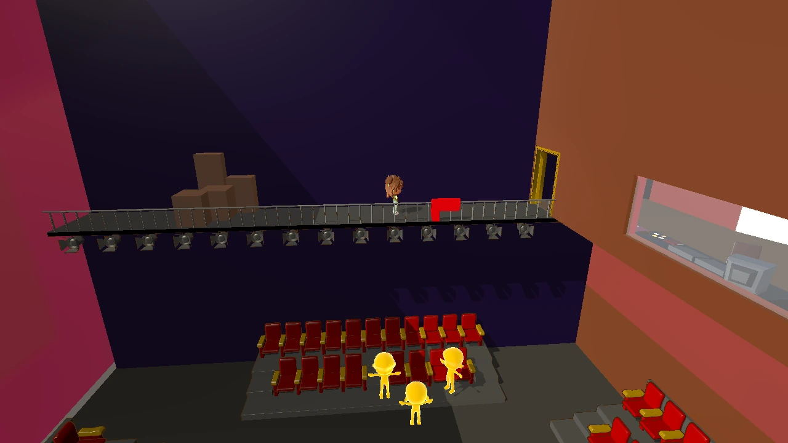

USC / Advanced Games Project · Detective adventure
Line by Line
Designing readable spaces for a detective story solved through crosswords.

Overview
Line by Line is a USC Advanced Games Project: a third-person detective game in which clues and conversations feed into crossword-based deductions. I contribute as a level designer, working on the theatre's spaces, navigation, clue placement, and camera framing.
My contribution
- Iterated on the balcony and control-room layout, including the relationship between adjoining spaces.
- Adjusted prop and clue placement to improve visibility and click access.
- Worked on camera framing and transitions across theatre areas.
- Checked walkable routes and barriers while collaborating through Perforce.
Making clues reachable and readable
In a click-to-move investigation, a clue needs both a visible position and a usable approach. Layout work included repositioning a bag clue and checking how props, boundaries, and camera angles affect interaction.
Connecting the theatre
The balcony, control booth, and seating areas need to read as connected spaces. My work explored room boundaries, camera transitions, and the arrangement of existing props within the team's level structure.
A closer look
Project gallery
Images show development studies from October 2026, rather than the latest team build.